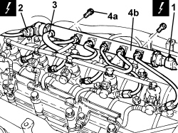

1060F30 SINGLE FUEL MANIFOLD PIPE - R.R.
- Path
- Procedures > 10 ENGINE > 1060 DIESEL INJECTION SYSTEM > 1060F INJECTORS AND PIPES > 1060F30 SINGLE FUEL MANIFOLD PIPE - R.R.
- Kind
- repair procedure (removal / refitting; the operation number is the code)
- Applies to
- engines: 2.4 JTD 20v; all production periods
- Interactive page
- https://sloeber94.github.io/elrnDB-aBrrSpdr/en/#/946002988
Applies to: engines: 2.4 JTD 20v; all production periods
 Removing
Removing
 Refitting
Refitting- Make sure that the ignition key is in the OFF position, then disconnect the negative battery terminal (-).
Description | Connector | |
|---|---|---|
- | Battery |
Op. 1016A10 SOUND-PROOFING COVER - R.R
Op. 1060F20 PIPE FROM PRESSURE PUMP TO FUEL MANIFOLD - R.R.
Op. 1060F36 PIPES (ALL) FROM FUEL MANIFOLD TO INJECTOR - R.R.
1. Detach the electrical connection from the fuel pressure sensor.
Description | Connector | |
|---|---|---|
1 | Fuel pressure sensor |
2. Detach the electrical connection from the fuel pressure regulator on the injector single manifold.
Description | Connector | |
|---|---|---|
2 | Fuel pressure regulator on rail | See N087 |
3. Loosen the band and disconnect the fuel return pipe from the single fuel manifold pipe to the fuel return manifold, single fuel manifold pipe side.
4. Undo bolts (4a) and remove single fuel manifold pipe (4b), complete with fuel pressure sensor and fuel pressure regulator.

Applies to: engines: 2.4 JTD 20v; all production periods
Refitting
Removing- Fit the single fuel manifold pipe complete with fuel pressure sensor and fuel pressure regulator and secure it by tightening the bolts to the recommended torque.
Component | Fastening | dia | Value (daNm) | Validity |
|---|---|---|---|---|
Single fuel manifold pipe (rail) | Bolt | M8 | 2.3 ÷ 2.8 | 2.4 JTD 20V |
- Connect the fuel return pipe from the single fuel manifold pipe to the fuel return manifold, single fuel manifold pipe side, and tighten the band.
- Secure the electrical connection to the fuel pressure regulator on the injector single manifold.
- Secure the electrical connection to the fuel pressure sensor.
Applies to: engines: 2.4 JTD 20v; all production periods
Op. 1060F36 PIPES (ALL) FROM FUEL MANIFOLD TO INJECTOR - R.R.
Op. 1060F20 PIPE FROM PRESSURE PUMP TO FUEL MANIFOLD - R.R.
Op. 1016A10 SOUND-PROOFING COVER - R.R
- Connect the negative battery terminal (-).